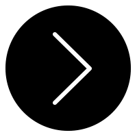

Augustus 2018 - heden
Conservator
Museum aan de Stroom Antwerpen
Conservator maritieme collectie
Museumconservator maritieme collectie vanaf 1830
Taken:
beheer van binnen- en buitencollectie
inhoudelijk uitdenken van tentoonstellingen
verzorgen publieksmomenten
collectieresearch
volgen actualiteit museaal en varend erfgoed
Competenties:
kennis collectie en geschiedenis
netwerken
samenwerken
opmaken subsidiedossiers
kennis van het veld
technische kennis vaartuigen
Periode:
augustus 2018 - heden